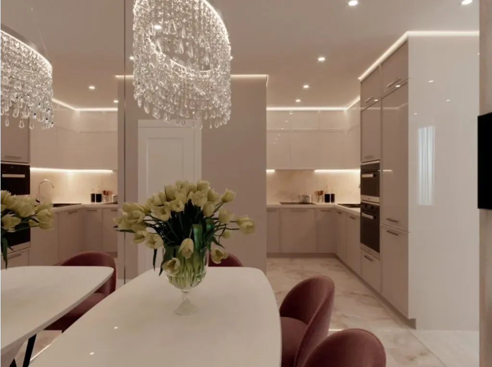

Кухни на заказ · Краснодар
Кухни на заказ в Краснодаре – фасады выбираете вживую
Стенд с образцами в шоуруме — видите, как цвета сочетаются между собой, до заказа. Монтажник подключает технику — сантехник не нужен отдельно.

- Предварительный расчёт за день
- Образцы фасадов привозим на замер
- Гарантия на фурнитуру 24 месяца
Сколько стоит
Точную смету считаем после замера, а прицениться можно сейчас. В цену входят корпус, фасады, столешница, фурнитура с доводчиками и монтаж.
Кухни, столешница кварц
- Кухня прямая 3 мэмаль, кварц, доводчики на всех дверцах и ящикахуточнить
- Фасад «Матовый графит»МДФ в эмали, без ручекуточнить
- Фасад «Тёплый белый»МДФ в суперматовой эмалиуточнить
- Фасад «Глубокий зелёный»МДФ в эмали, цвет по RALуточнить
- Фасад «Дуб натуральный»шпон дуба на МДФ, масло-воскуточнить
Шкафы и гардеробные
- Шкаф распашной или купедо потолка, с подсветкой и наполнениемуточнить
- Гардеробнаяоткрытая система или комната с дверьюуточнить
Техника и мойка – отдельно. Угловые кухни считаем по размерам. Расчёт до замера предварительный, точная смета – после замера вместе с 3D-проектом.
Цены для примера. В вашем сайте будут ваши.
Как заказать
- 01
Размеры и расчёт
План из ЖК или фото стены с рулеткой – за день предварительный расчёт.
- 02
Замер с образцами
Приезжаем с дальномером и образцами фасадов – выберете материал вживую.
- 03
3D-проект и точная смета
Меняем проект, пока не понравится.
- 04
Договор с датой
Срок изготовления 2–2,5 месяца и дата монтажа – в договоре.
- 05
Изготовление и монтаж
Собираем и подключаем всю технику и мойку – отдельный сантехник не нужен. Пыль увозим с собой.


Что обещаем
Цена в договоре не меняется
После подписания смета не растёт.
Фасады как на образце
В шоуруме стенд с образцами – смотрите, как сочетаются цвета, до заказа.
Срок и дата монтажа в договоре
Не «примерно через месяц», а конкретная дата.
Мастер подключает всю технику
Отдельный сантехник не нужен – монтажник подключает мойку и технику сам.
Отзывы с Яндекс.Карт
«Абсолютно случайно нашли салон, именно в тот момент когда отчаялись в поиске хорошей кухни по адекватной цене! Приехали, нас встретил Сергей и за первые 15 минут разговора мы поняли, что нашли то, что так давно искали. Мы остались в полном восторге, кухня удобная, качественная, красивая.»
Ульяна · 12 сентября
«Пришла в офис без записи, меня приняли и 3 часа совместными усилиями рисовали дизайн кухни. Ребята учли все пожелания. Сказали ожидать 2,5–3 мес, но через 2 месяца кухня уже была готова. Мастер подключил всю технику! Не пришлось отдельно нанимать сантехника, очень удобно.»
Марина Ш. · 20 сентября
«Кухни очень красивые, качественные, заказ выполнили даже раньше заявленного срока. Цены очень демократичные, отличное сочетание цена-качество! Собрали просто ИДЕАЛЬНО!!! Никаких нареканий ни к качеству, ни к фурнитуре.»
Юлия Коробка · 28 ноября 2025
Отзывы с карточки на Яндекс.Картах, без правок.
Контакты
- Адрес
- ул. Автолюбителей, 13, Краснодаре
- Часы
- Пн–Сб 10:00–18:00
- Телефон
- +7 (989) 825-22-22